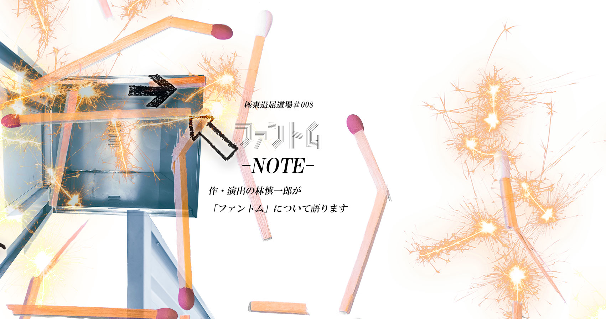

１１月末と１２月頭に新作を上演することになりました。今回、アイホールは、ホームグラウンドというか、毎回やっているんですけれど、名古屋は初めてです。
割と毎回、大阪以外の都市で公演していたのですが、名古屋は初めてで、ナビロフト×伊丹想流私塾交流企画Visitorsという企画です。
ナビロフトは、元々は、北村想さんが主宰されていた「プロジェクト・ナビ」という劇団の稽古場だったのですが、それが劇場になっています。アイホールの戯曲塾、「想流私塾」の塾長を想さん、今年で退いたんですね。関西には、想さんがこの戯曲塾で関わったメンバーが多くいるんですが、そんな人たちが関西にいるよと出会いにいく企画が、虚空旅団の高橋さんの音頭取りで始まって、４劇団、僕、虚空旅団、空の驛舎、光の領地が決まり、それから北村想さん書き下ろしの新作講談、プラスでコンブリ団も急きょ１日やることになりましたが、そういう企画に参加します。
簡単に言うと、極東版の不思議の国、鏡の国のアリスになりました。駅の改札を出たところでコインロッカーのカギを拾った女性がいて、目の前のコインロッカーを開けてみた。カギに「私を開けて」と書いてあるんです。アリスみたいに。「私を飲んで」みたいな。
アリスだったら、飲んだら、小さくなりますね。それで、鍵を開けてみたら、また中に鍵が入っていて、その鍵でほかのロッカーを開けてみる。また、鍵が入っていて、繰り返しているうちに、あれっと気づくとコインロッカーの中にいるみたいな。極東版のアリスの導入です。そして、コインロッカーに迷い込んでしまった女性が、その扉が開けられる時まで、ロッカーの中の不思議の街を観光する、という筋書きです。コインロッカーって各居室が独立していますよね。戯曲上では、「モジュール」と名付けているんですけど、それぞれが町の構成要素になっていう。それがつながってできた、ツギハギの街を旅していくんです。
それが、どういう街かは、はっきり明示はしていないんですけど、函館をイメージしています。函館は僕の故郷なんですが、去年、函館公演した時に、北村想さんが見に来られて、函館を評して「脈絡のない街」だと。道を挟んで、カトリックとプロテスタントの教会が並んでいたり、普通ならばこういう道ならこういう家が並んでるとか、この道をいけば、大体こんな風景が広がってくるだろうとか、文脈みたいなものあるはずなのに、それがバラバラだとおっしゃっていたんですね。僕自身はすごくそれが新鮮でした。僕はそこで生まれ育っていますので、不思議に思うわけもなく、関西に出てきてから、自分の故郷を外から見て言葉にされる機会がなかったんです。しかも、劇作家の目で見た、故郷の分析はとてもおもしろくて、自分の街について改めて気づいたところがあったんです。それで、ロッカーの中に広がっている街を函館の街を模して作ってみることにしました。
この鍵を拾った女性が、街の風景に溶け込んだり、眺めたりしながら過ごしていく、ルーツを辿っていくような、巻き込まれていくような、脈絡のない展開を続けます。
アリスなんで。結局、夢落ちなんですが、ロッカーの中にはいろんな荷物があるじゃないですか、アリスもどちらが見ていた夢なのかわからないという構造になりますが、同じようにロッカーの街の登場人物たちが見ている夢なのか、その女性が見ている夢なのか、という様相を呈してきて、語り手がどんどん変わっていきながら、街全体が見ている夢のようになっていきます。最終的にはその鍵を拾った女性が、おそらく自分の故郷で体験したある他愛のない出来事を、強烈に思い出していきます。
コインロッカーって都会にしかないんですよ。田舎でも大きい施設とかプールなどにはあるとおもいますが、こう、街のいたるところに点在しているというのは都市ならでは。
そこに、自分の大切なものとか、自分の一部を一旦預ける、保留にしておくという行為が都市ならではで独特だなあと思います。たとえばある場所にある目的をもって行く、用事がすんだら家に帰ればいいんですが、また、まるで別の目的をもって別の場所に行く。家に帰るのではなく、一旦、荷物を置く。という一旦そこに預けておくということが、都市というか、多目的な場所だから、色んな目的がちりばめられた場所だから、そういうことが起こるのかなとか。人が大勢いる中で、街のど真ん中で、おそらく取られてはいけないものとか、自分にとっては大事なものを、ほかの目的のために、一旦街中（まちなか）に鍵をかけて預けておくというか、宙ぶらりんにしておくという感覚というか、場所や行為がおもしろいなあと思ってまして、コインロッカーは、都市独特の装置なんじゃないかなあと思っています。
誰か人に一時預かってくれませんかと頼むのではなく、同じサイズの箱に鍵をかけて、ある時間たったらまた戻って帰っていくという行為、自分の一部を保留にしておく時間が面白いと思ったんですね。そこから、自分の一部がロッカーに預けられているときに、そこには、どんな時間が流れているんだろうということをちょっと考え始めたたのが最初なんです。シュレディンガーの猫って話がありまして、簡単にいうと、猫が50%の確立で毒ガスが出る箱の中に入れられる。その箱の中にいる猫はに生きてますか、死んでますかと問われたときに、量子力学では、生きてるし、死んでるしという状態だという話です。つまり、こっちが観測してなければ、どちらの状態でもありうるという話なんですが、ロッカーにある荷物も、預けてしまったら、そのロッカーの中で、自由自在に動いてるんじゃないかって、そういう仮説ですね。預けられた自分の一部が、そのロッカーの中の架空の街をアリスよろしく旅するわけです。その架空の町が、何かといえば、都市生活者が一旦、保留にして預けているものは、自分の生まれ育ったところ、故郷ではないかと。自分の出自というか、どこから生まれてどこから来たのか、どういうところに暮らしていき、この街に来るのに至ったのかとか、ロッカーの中で語り合われているみたいなことにしてみると、都市に暮らす人の心情をおもしろくあぶりだされるかもしれないなあと思っています。
続編ですね。
「ファントム」では要素がちょっと混ざってます。映画の「不思議の国のアリス」もたくさんありますが、よく混ざっていますね。「不思議の国」は割と即興的に話が進んでいく感じなんですが、「鏡の国」は、もう少し構造的というか、チェスの駒の進み方に合わせて進んでいます。今回も区切られたロッカーというところを着想の原点として進んでいく構造は、「鏡の国」に近いかしらと思います。
１回見たぐらいではよくわからない（笑）といわれることが多いので。今回は、リピーターは無料としました。割引もしたことあるのですけど、劇場に来るまでにすでにお金と時間をかけてお越しいただいているので、その労を惜しまずきてくれた方は、どうぞご覧くださいということにしました。２回見たことによって、お客さんがよくわかったって言ってくれるのか、ますますわからないと思うのか、そもそも、「わかる」ということを信頼はしていないのですが。観客側も見慣れてくることで、１回目に見た時と違う印象になったり、別のものを見たって感覚になればよいかなと。全体がわかっているから伏線に気づくとかもあると思いますし、上手から見る、下手から見る、前から見る、後ろから見るで印象は大きく変わると思いますので。
どれぐらい暮らしたら自分の街になるんだろうってのが疑問で。自分が生まれてから暮らしたら、自分の街になるのかなと、さかのぼって３代前くらいから住んでればOKなのかとか。函館に住んでいた親が関西に移住してきたっていうのもあるんですけど、もう函館に帰ることはなくなったので、親はどこの人になるのかなと。亡くなってから、二人は生きていた時間より、膨大な時間をこっちで過ごすことになるのかなと。関西に来たのが１８歳の時です。こっちに越してきて２０年は越えてますから、もう函館より関西にいる方が長くなりました。とても個人的なことから始まったこの作品ではありますが、都市に住む人たちが見ている共通の夢のように、見えたらいいなと。それが、ツギハギになっても出来上がった架空の「故郷」みたいになったら面白いと思っています。